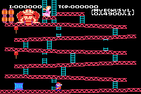

Famicom Mini 02 - Donkey Kong (Japan) (En)
EEPROM 64K Save Format Mapped (Family Spec) 💾 MultiBoot 🎮 4P Link 📡 Wireless
Cartridge Identity
- Game Code
FDKJ(FamilyFDK)- Header Title
DONKEY KONG- Maker / Revision
01/ rev0- ROM Size
- 1.0 MiB (1,048,576 B)
- Save Media
EEPROM 64K- SHA-256
c3b05c5b0f4fe4ad5feb1fa845950c66735f6e4b2bb088cbc354777110b3efc6
Screenshots


Link Cable & Multiplayer Communications
This title contains detected communication capabilities: 💾 MultiBoot 🎮 4P Link 📡 Wireless.
Detailed protocol specifications, SIO registers, Joybus commands, and MultiBoot sequences are documented in the Link & Multiplayer Reference.
- Multi-Player SIO (4P)
- 16-bit ring network · SIOCNT (
0x04000128) literals:0x005120,0x005494,0x0055f0· SIODATA32/SIOMULTI0 (0x04000120) literals:0x000be0,0x005438,0x005718 - Nintendo Wireless Adapter
- AGB-015 RFU driver signature
RFU-MBOOTat offset0x009ca0 - Nintendo Wireless Adapter
- AGB-015 RFU driver signature
RFU-MBOOTat offset0x014784 - Nintendo Wireless Adapter
- AGB-015 RFU driver signature
RFU-MBOOTat offset0x01c5b0 - Nintendo Wireless Adapter
- AGB-015 RFU driver signature
NINTENDOSio32IDat offset0x009cac - Nintendo Wireless Adapter
- AGB-015 RFU driver signature
NINTENDOSio32IDat offset0x01c5bc - Single-Cart MultiBoot
- Single-Cartridge MultiBoot (Download Play) client/server handler · Thumb SWI 0x25 (
0xDF25):0x0007b6· SDK signatures:MBOOTat0x009ca4
Battery Save Format Specification (Family Shared)
This release shares its save architecture with canonical family reference Classic NES Series - Donkey Kong (USA, Europe) (Family
FDK).
Open Family Save Format Spec (FDKE)Download save-format.json
- Canonical Specification
FDKE· 4 mapped fields · 0 verified checksum(s) · Confidence: HIGH- gbakit Built-In Support
- Built-in (FDKE)
gbakit save verify FDKE save.sav
gbakit save decode FDKE save.sav
gbakit save fix FDKE damaged.sav -o repaired.savObserved Battery Save Layout
- Fill Byte & Active Size
0x00fill · 512–512 / 8,192 B active (entropy 0.00 bits/B)- Active Offset Ranges
0x0–0x1FF(1 total)- ASCII Magic / Headers
- None detected
- Observed Variable Regions
- 0 bytes across 0 spans: None
- Candidate Checksum/Counter Spans
- None
Text, Fonts & Scene Data
- Primary Text Encoding
- Compressed / custom-encoded text
- Font & VWF Indicators
- No VWF Table No 1bpp Font · BIOS SWIs: BitUnPack
0x10:17· LZ770x11/12:15· Huffman0x13:6· RLE0x14/15:26 - Scene & Packaging
0ROM pointer tables (≥32 entries,0≥200) ·0relativeu32TOCs ·55OAM metasprite hits
Regional Variants & Revisions (Family FDK)
- Classic NES Series - Donkey Kong (USA, Europe) (
FDKE, 1 MiB)